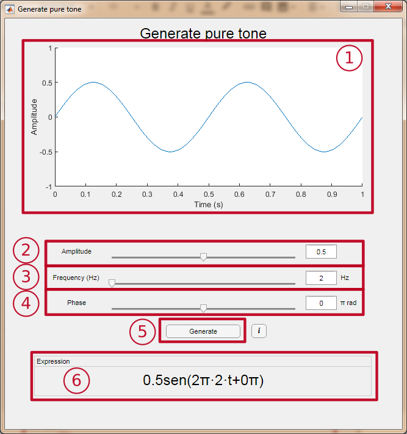
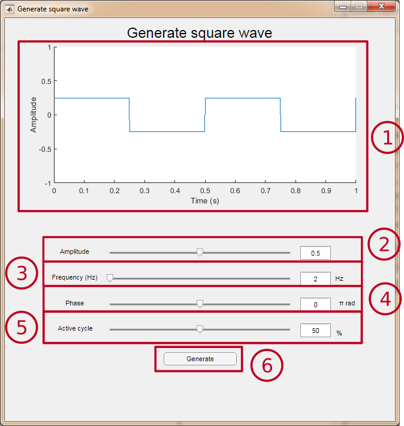
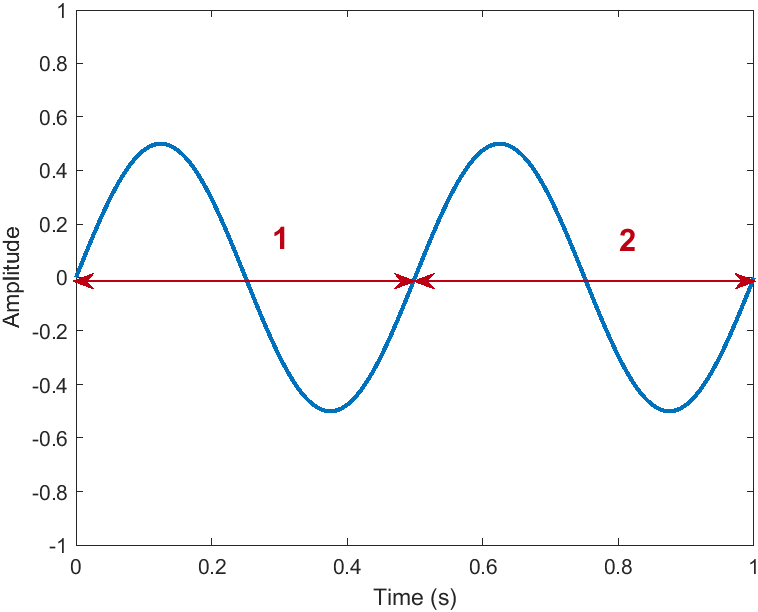
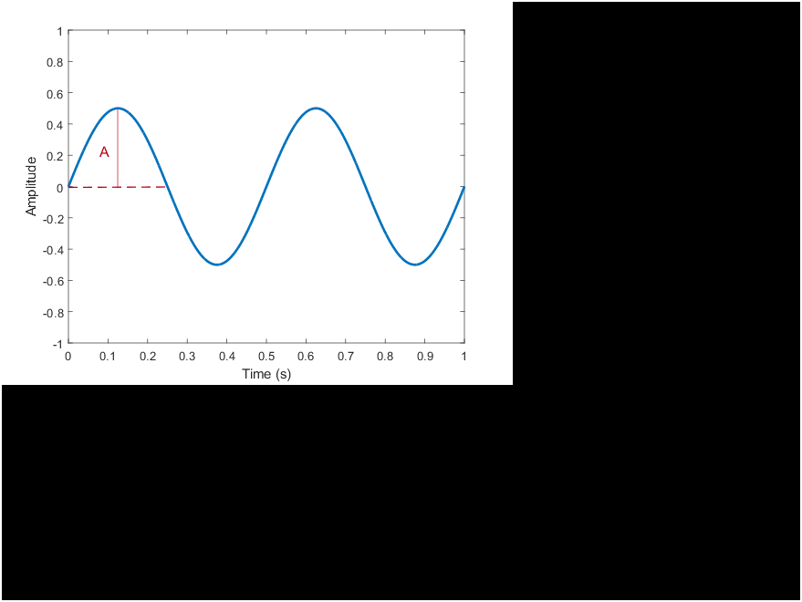
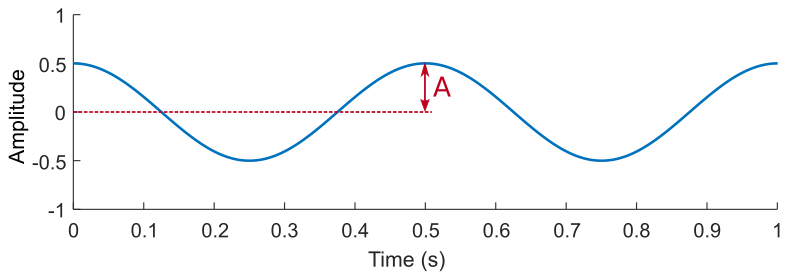

Generate pure tone
Interface

- Preview window: Allows to see the signal that will be generated by the module. It is updated when the value of a parameter changes.
- Amplitude selector: Allows to vary the amplitude of the sine between 0 and 1. The value can be changed by sliding the cursor or by changing the value in the text box.
- Frequency selector: Allows to vary the sine frequency between 1 and 20000 Hz. The value can be changed by sliding the cursor or by changing the value in the text box.
- Phase selector: Allows to vary the phase of the sine between -π and π radians. The value can be changed by sliding the or by changing the value in the text box.
- Generate button: Opens a new display window to observe a signal with the selected parameters, with a length of 1 second.
- Expression: Shows the mathematical expression of the signal with the selected parameters. It is updated when the value of a parameter changes.
Pure tone
A pure tone is a sinusoidal signal that has a single frequency. In this module it is generated using the sine function, and it is expressed by the folcursor lowing formula:
A sin(2πft + 𝜙),
where A is the amplitude, f is the frequency and 𝜙 is the phase.
- Amplitude: Maximum value of the signal.
 |
In this example the amplitude is 0.5 |
- Frequency: Number of times an entire signal cycle is repeated along a time unit. Measured in Hertz (Hz) is the number of times a signal cycle is repeated in 1 second.
 |
In this example the frequency is 2 Hz |
- Phase: Displacement of the sine. It is measured in radians, being 2π radian a complete cycle of the signal.

|
In this example the signal is shifted ¼ of cycle, so the phase is π/2 rad |
Harmonic synthesis
This module allows the generation of up to six superimposed pure tones, each with a different frequency and amplitude. The keyboard at the bottom allows you to select a note to observe its first six harmonics.
Interface

- Preview window: Allows to see the signal that will be generated by the module. It is updated when the value of a parameter changes.
- Frequency selector: Allows to select the frequency of each of the six components. It can be selected by typing in the text box or clicking on the arrows.
- Amplitude selector: Allows to select the amplitude of each of the six components. It can be selected by moving the cursor.
- Generate button: Opens a new display window to observe a signal with the selected parameters, with a length of 1 second.
- Octave: Allows to select the octave of the notes on the keyboard.
- Keyboard: Allows to select a note. When a note is selected, each of the six components will be assigned the frequencies of its first six harmonics, with a predetermined amplitude.
Harmonics
Harmonics are additional pure tones that arise naturally when a note is played. The frequency of each is determined by the product of the fundamental frequency (frequency of the note emitted) and a natural number (1, 2, 3, 4...).
Depending on the amplitude of each of its harmonics, the timbre of the sound changes.
Thus, the harmonics of a Do3 (130,813 Hz) are as follows:
Harmonic order | Frequency (Hz) | Note |
1 (Fundamental frequency) | 130.813 | C3 |
2 | 130.813 · 2 = 261,626 | C4 |
3 | 130.813 · 3 = 392,439 | G4 |
4 | 130.813 · 4 = 523,252 | C5 |
5 | 130.813 · 5 = 654.065 | E5 |
6 | 130.813 · 6 = 784,878 | G5 |
7 | 130.813 · 7 = 915,691 | Bb5 (lowly tuned) |
... | ... | ... |
Generate square wave
This module allows the generation of a square wave signal of one second duration, with the possibility of modifying the parameters of amplitude, frequency, phase and active cycle.
Interface

- Preview window: Allows to see the signal that will be generated by the module. It is updated when the value of some parameter changes.
- Amplitude selector: Allows to vary the amplitude of the square wave between 0 and 1. The value can be changed sliding the cursor or modifying the value in the text box.
- Frequency selector: Allows to vary the frequency of the square wave between 1 and 20000 Hz. The value can be changed by sliding the cursor or modifying the value in the text box.
- Phase selector: Allows to vary the phase of the square wave between -π and π radians. The value can be changed by sliding the cursor or modifying the value in the text box.
- Active cycle selector: Allows to vary the active cycle of the square wave between 10 and 90%.
- Generate button: Opens a new display window to observe a signal with the selected parameters, lasting 1 second.
Square wave
A square wave is a periodic wave formed by instantaneous transitions between two levels.
The configurable parameters are as follows:
- Amplitude: Difference between the two levels.
|
In this example the amplitude is 1. |
- Frequency: Number of periods in 1 second, measured in Hz (For more information, click here).
- Phase: Displacement of the signal with respect to its original position. (For more information, click here).
- Active cycle: Part of the period in which the signal is at the highest level (or active level). In this case, it is measured as a percentage of the total duration of the period.
 |

|